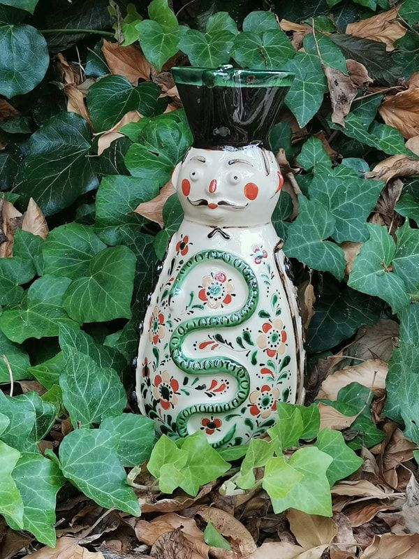
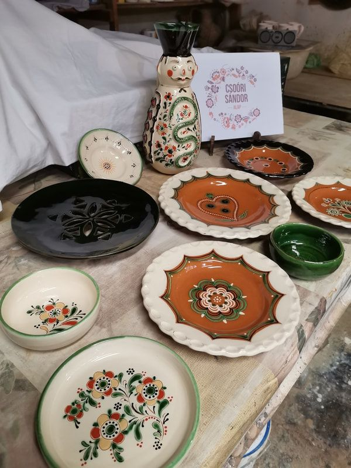
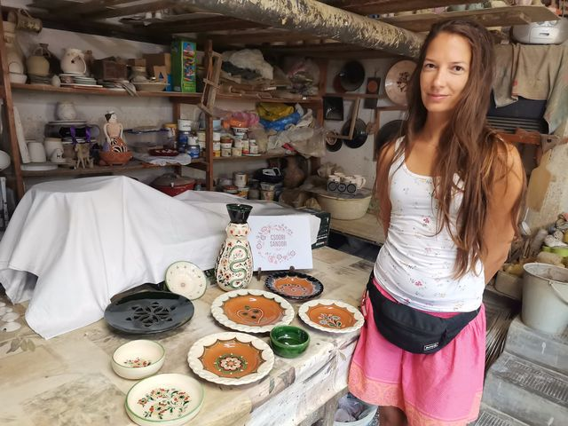
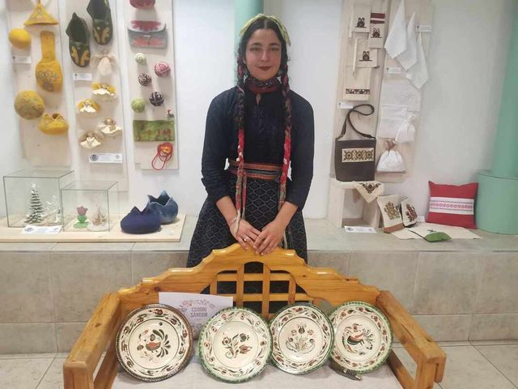
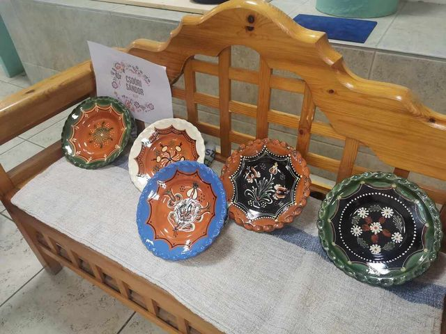
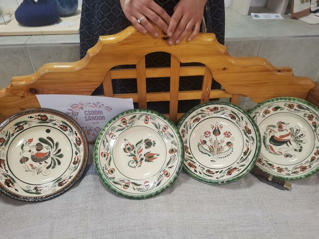

2024-ben is lehetőség nyílt arra, hogy a Csoóri Sándor Alapnak köszönhetően ismét tanítványokat fogadjon Szűcs Imre családi fazekasműhelye, így tudásátadással telt a nyár eleje. A Mester és Inas program keretein belül két inas érkezett, hogy a tiszafüredi fazekasság területén elmélyítsék eddigi tudásukat és további tapasztalatokra tegyenek szert.
Duró Réka márciusban kezdte munkáját a tiszafüredi fazekasműhelyben, mestere Szűcs Andrea fazekas népi iparművész, a Népművészet Ifjú Mestere, aki ez évtől népi játszóházvezető, népi játék és kismesterség oktató. Korongolt hagyományos edényeken kívül a laptechnikával és a felrakásos hurkatechnikával is sikeresen birkózott meg. Korongolt tányérjait és kis táljait írókázott illetve karcolt füredi motívumokkal díszítette. Laptechnikával készített táljait áttöréses, szerkesztett rozetta ékesíti, ezekre modern mázakat használt. Hurkatechnikával készült Miska kancsóját különösen nagy precízséggel kivitelezte. Díszítményét hagyományos módon plasztikus rátétekkel, karcolással és írókázással készítette.
Gölöncsér Nóra májusban érkezett a műhelybe a vadregényes dél-alföldi tanyavilágból, hogy az eddig megszerzett ismereteit tovább bővítse és Szűcs Imre oktatása által a tiszafüredi fazekas-hagyományokba is belekóstolhasson. Munkája során mestere a csipkés szélű, hüvelykezett tányérok és a különleges tálak felé terelte. Ezek korongozását és díszítését egyaránt szépen teljesítette.
Mindkét inassal élmény volt együtt dolgozni, hiszen jó tanítványok voltak: érdeklődők, szorgalmasak és megfogadták mestereik tanácsait.
#csoorisandoralap
A közös munka során készült edényeiket az alábbi fotók szemléltetik.











